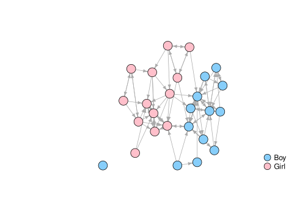

Segregation is a network-level property such that edges between predefined groups of vertices are relatively less likely. Network homophily is a individual-level tendency to form relations with people who are similar on some attribute (e.g. gender, music taste, social status, etc.). In general homophily leads to segregation, but segregation might arise without homophily. This package implements descriptive indices measuring homophily/segregation. It is a computational companion to Bojanowski and Corten (2014).
Installation
Install the released version of netseg from CRAN with:
install.packages("netseg")or the development version from GitHub with:
# install.packages("remotes")
remotes::install_github("mbojan/netseg")Example
To illustrate, consider the Classroom network below:
library(netseg)
library(igraph)
#>
#> Attaching package: 'igraph'
#> The following objects are masked from 'package:stats':
#>
#> decompose, spectrum
#> The following object is masked from 'package:base':
#>
#> union
data("Classroom")
plot(
Classroom,
layout = graphlayouts::layout_with_stress,
vertex.color = c("pink", "lightskyblue")[match(V(Classroom)$gender, c("Girl", "Boy"))],
vertex.label = NA,
edge.arrow.size = 0.5
)
legend(
"bottomright",
pch = 21,
legend = c("Boy", "Girl"),
pt.cex = 2,
pt.bg = c("lightskyblue", "pink"),
col = "black",
bty = "n"
)
The extent of gender segregation in this network can be assessed using one of the indices provided in the package, for example odds ratio of within-group tie (orwg())
orwg(Classroom, "gender")
#> [1] 16.58071tells us that same-gender tie odds are 16.580705 times greater than tie odds between genders.
Coleman’s index (Coleman 1958) assesses the segregation on the group level:
coleman(Classroom, "gender")
#> Boy Girl
#> 0.9084249 0.7909699Qualitatively speaking it compares the proportion of same-group neighbors to the proportion of that group in the network as a whole. It is a number between -1 and 1. Value of 0 means these proportions are equal. Value of 1 means that all ties outgoing from a particular group are sent to the members of the same group. Value of -1 is the opposite – all ties are sent to members of other group(s).